Vaste prijs, vaste tijd
Elke beurt heeft een vaste prijs en duur. Je krijgt vooraf een prijsopgave per e-mail, en Jay begint pas na jouw akkoord.
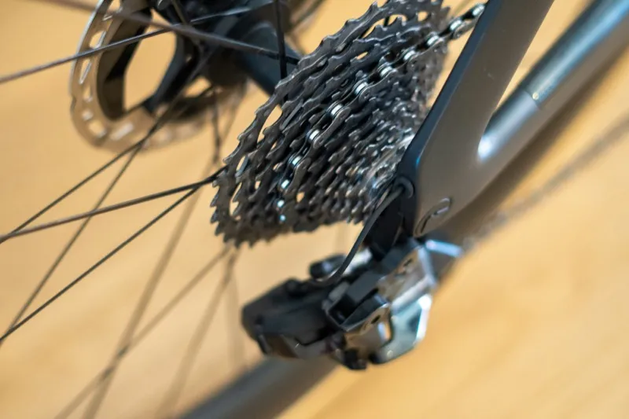
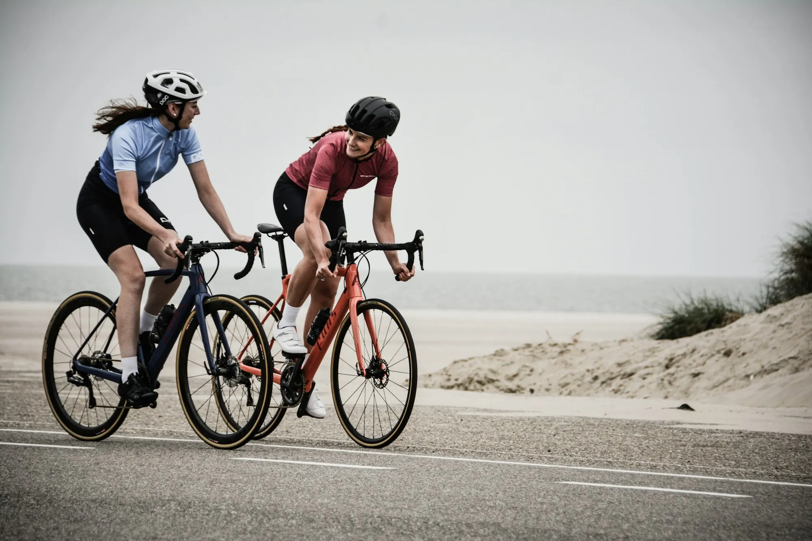
Elke beurt heeft een vaste prijs en duur. Je krijgt vooraf een prijsopgave per e-mail, en Jay begint pas na jouw akkoord.

Jay doet het werk en legt uit wat hij ziet en waarom hij iets vervangt. In de reviews komt dat het vaakst terug: geduld, kennis en eerlijk advies.
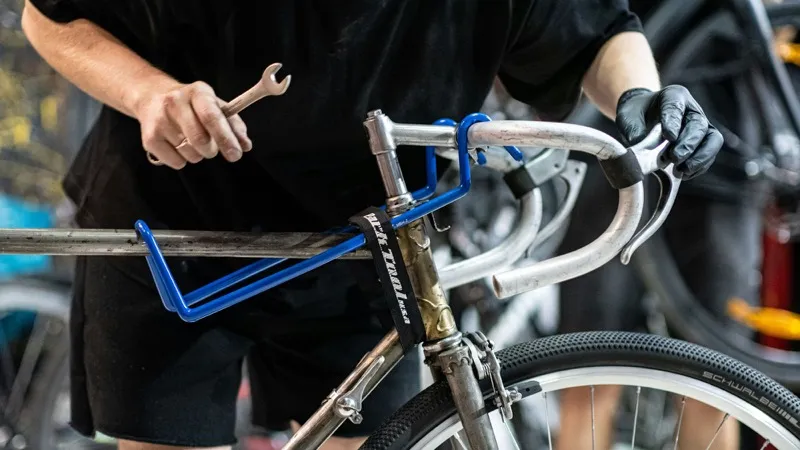
Met de haal- en brengservice wordt je fiets thuis opgehaald en netjes teruggebracht. Handig als de werkplaats niet op je route ligt of je overdag werkt.
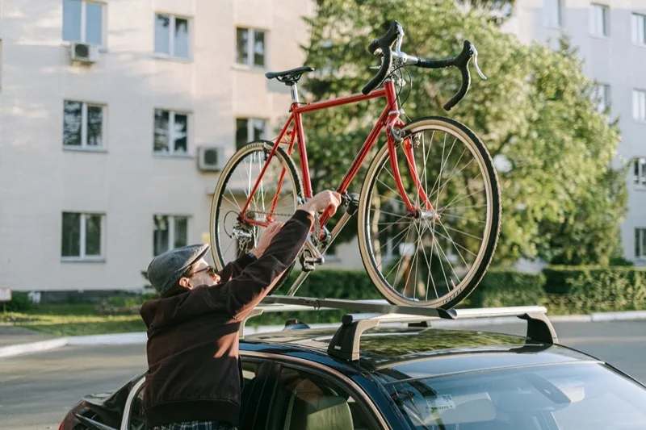
Alle beurten zijn exclusief materiaal. Slijtagedelen vervangt Jay alleen in overleg, met originele onderdelen.
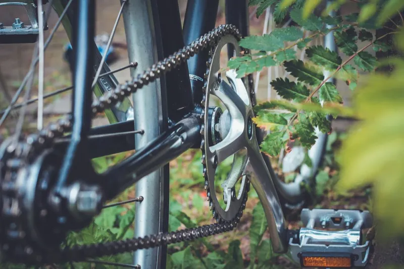
75 minRace, MTB of gravel. Voorkomt grotere reparaties en houdt alles soepel.
€ 69excl. materiaal
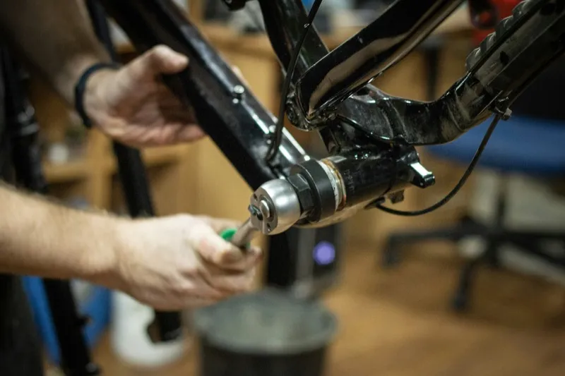
180 minRace, MTB of gravel. De jaarlijkse grote beurt: helemaal uit elkaar en weer opgebouwd.
€ 159excl. materiaal
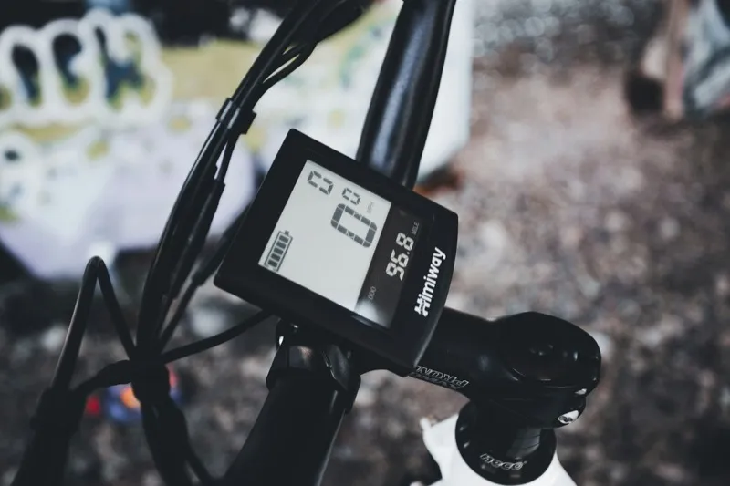
90 minVoor elke e-bike. Inclusief software-update en controle van de aandrijving.
€ 85excl. materiaal
Controle, onderhoud of e-bike. Prijs en duur staan erbij, dus geen verrassingen achteraf.
De planner toont de echte werkplaatsagenda, dinsdag tot en met vrijdag. Je ziet meteen wanneer je fiets klaar is.
Vanaf 7.30 uur kun je hem brengen vóór je werk. Of Jay haalt hem thuis op.
Jay bekijkt je fiets en mailt je vooraf een prijsopgave. Hij begint pas na jouw akkoord, dus je weet precies waar je aan toe bent.
Je krijgt een berichtje als hij klaarstaat, met uitleg over wat er gedaan is en wat je nog kunt verwachten.
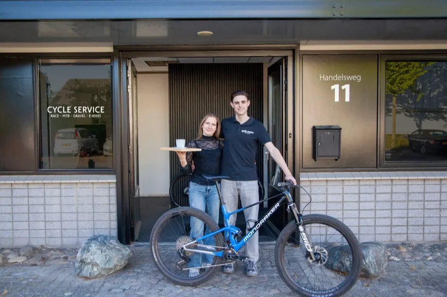
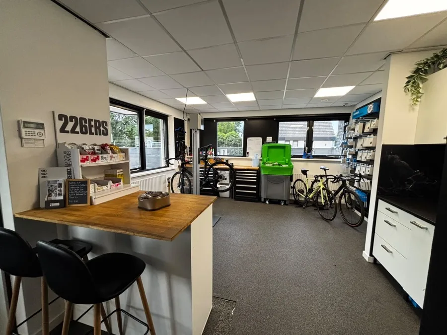
Begonnen in de avonduren voor vrienden, naast zijn werk bij Cycletrend en Canyon. Opgeleid in fietstechniek aan het Koning Willem I College. Nu een eigen werkplaats en winkel aan de Handelsweg, met ruim 300 fietsers die steeds terugkomen.
Geen wand vol van alles. Een paar merken die Jay persoonlijk getest heeft, plus geselecteerde occasions met een verse grote beurt.
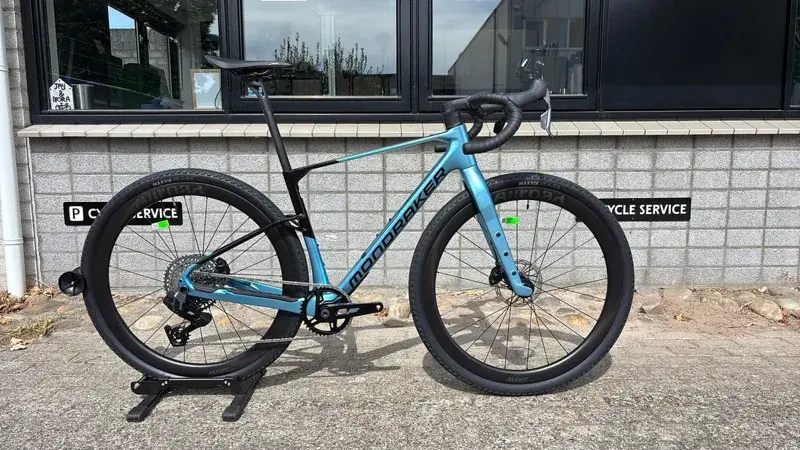
Veelzijdige carbon gravelbike.
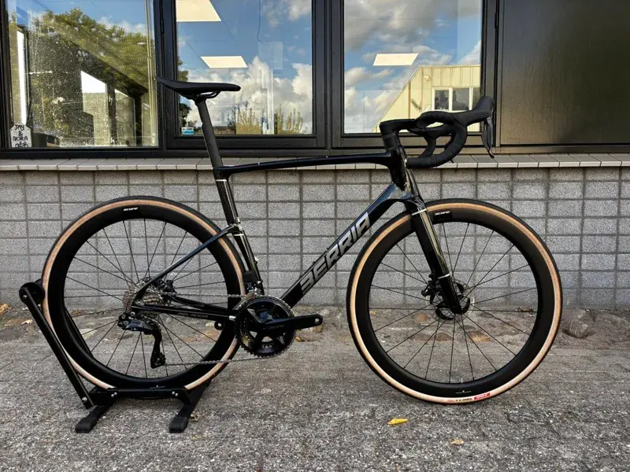
Allround carbon racefiets.
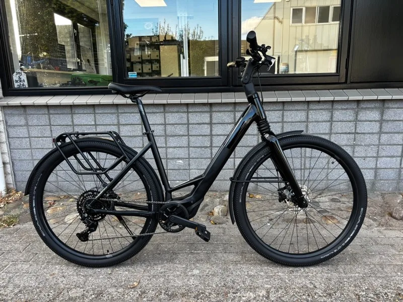
Lichte e-bike voor stad en toer.
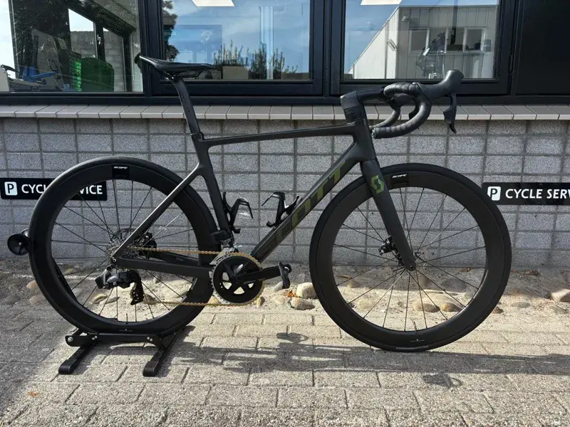
OccasionOccasion in uitstekende staat, na een grote beurt.
Samenwerkingen met o.a.
Jay heeft veel passie voor z'n werk, dat zie je terug in hoe je fiets wordt gemaakt! Ik ben voor de eerste keer naar hem geweest, maar zeker niet de laatste. M'n gravelbike voelt als nieuw!
Supervriendelijk, wist meteen wat het probleem was en hoe het op te lossen (derailleurpad moest gericht worden). Nam ook nog de tijd om uit te leggen wat het probleem was en hoe hij het zou oplossen. Zeer tevreden!
Kundig met faire prijzen, maar bovenal eerlijk en een erg fijn persoon om een fiets bij te kopen! Is een stukje rijden, maar mij 't wel waard. Jay, keep up the good work!
Fiets werd thuis opgehaald en netjes weer thuis afgeleverd.
Enorm kundige vakman met geduld en kennis van zaken, een aanrader! Onderhoud voor mijn MTB laten doen door Jay, zeer goede ervaring.
Kies een beurt en een tijd, breng je fiets (of laat hem ophalen) en rij weer als nieuw. Je krijgt meteen een bevestiging van Jay.